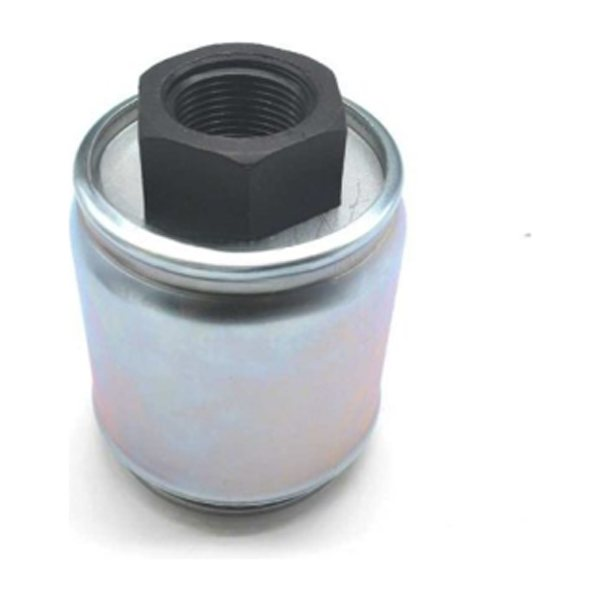

Available
Email for a quote
Toyota 18682-404 Hydraulic Filter
| OEM part number | 18682-404 |
| Fits | Toyota |
| Models / notes | 7FD/G10/30 |
| Category | Filters |
| Type | Aftermarket replacement |
Send us the quantity you need and we'll reply with pricing, usually within 24 hours. Not the exact part? We can source it. Send the part number or a photo.